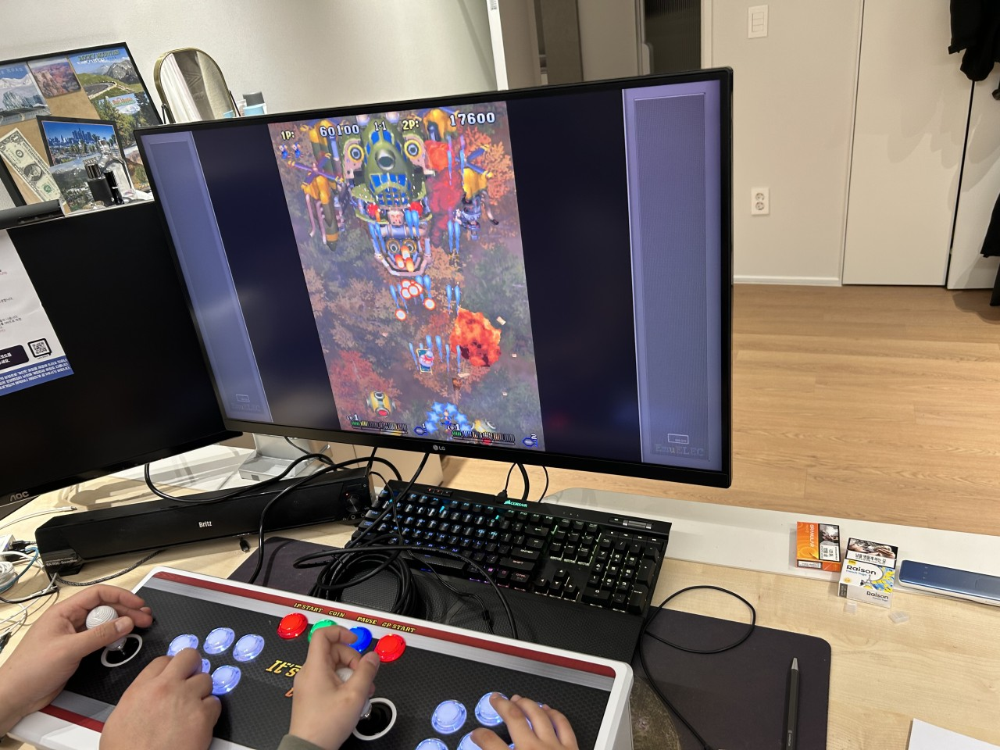

집에서도 그 느낌을
그대로 즐기고 싶었습니다.
처음부터 게임기 사업을 해야겠다고 생각했던 건 아닙니다. 어느 날 예전에 즐기던 게임을 다시 하다가 친구들과 오락실을 다니던 시절이 먼저 떠올랐어요.
당시 판매되던 가정용 게임기는 게임이 많아도 정작 하고 싶은 게임이 제대로 안 되거나, 설정과 조작감이 아쉬웠습니다. 그래서 거창한 사업계획보다 “그냥 내가 사고 싶은 게임기를 만들어보자”는 마음으로 하나씩 테스트하고 부품을 바꿨습니다.
그렇게 노리박스가 시작됐습니다.
MY STANDARD누구나 쉽게,
제대로 즐길 수 있어야 합니다.

“이 일을
계속해도 될까?”
제품을 만드는 것보다 이 질문이 찾아올 때가 가장 힘들었습니다. 판매 뒤에도 오류와 문의, A/S와 부품 문제를 계속 직접 해결해야 했습니다.
열심히 준비한 제품이 생각만큼 판매되지 않을 때도 있었습니다. 그래도 “어릴 때 오락실 다니던 생각이 나네요”, “아이랑 같이 하는데 제가 더 재미있어요”라는 말을 들으면 다시 제대로 만들어보자고 생각했습니다.
아빠의 추억이
아이의 새 추억이 되던 날.
아이에게 “아빠 어릴 때는 이런 게임을 했어”라고 알려주던 아버지가 있었습니다. 어느 순간 아이가 먼저 게임기를 켜고 아빠를 불러 같이 하자고 했답니다.
“처음에는 제 추억을 아이에게 보여주고 싶어서 샀는데, 지금은 아이와 새로운 추억을 만들고 있네요.”
노리박스가 어린 시절의 추억을 다시 꺼내고, 함께하는 오늘의 기억으로 이어준다는 것. 제가 계속 만드는 이유입니다.
노리박스가
여기까지 온 길
날짜보다 선명하게 남은 장면들입니다.
- 01기억
오락실의 시간이 다시 떠오르다
게임보다 먼저 친구들과 함께했던 시간이 떠올랐습니다.
- 02시작
내가 사고 싶은 게임기를 만들다
게임을 하나씩 실행하고 부품을 바꾸며 기준을 세웠습니다.
- 03지속
고객의 한마디로 다시 나아가다
추억을 되찾았다는 말이 이 일을 계속할 이유가 됐습니다.
- 04오늘
세대를 잇는 브랜드가 되다
오래된 즐거움과 새로운 기억이 만나는 제품을 만듭니다.